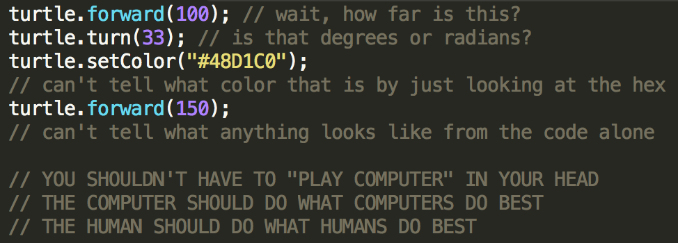

Getting Started with Joy.js
1) Download Joy.js
(unminified)
2) Download Joy's default stylesheet
3) Include both of them in your .html file
4) [then a miracle occurs]
5) you now have a live, direct, end-user programmable tool! ✨
But seriously, let's see a basic, concrete example of Joy.js in action. Let's say we want to let the user modify a box. First, we make the html:
<div id="joy"></div>
<div id="box"></div>
...where "joy" is the container for the Joy editor, and "box" is what your user can edit. Then, after including Joy.js & its default stylesheet, we tell Joy.js how to link up the editor & the box:
Joy({
// Where the Joy editor goes:
container: "#joy",
// The words & actors inside the editor:
init: "Make the box "+
// Define actors with JSON/object-literal notation:
"{id:'width', type:'number', placeholder:50}px wide, "+
"{id:'height', type:'number', placeholder:50}px tall, "+
"and colored {id:'color', type:'color'}",
// What to do when the user makes a change:
onupdate: function(my){
var box = document.getElementById("box");
box.style.width = my.data.width+"px";
box.style.height = my.data.height+"px";
box.style.background = my.data.color;
}
});
Et voilà! You get the following. Hover over a number or color to see what that would change in the box, then click/drag to actually change the box:
Yeah not exactly SIGGRAPH material here, but that's just a basic example. Now, let's see how to use Joy.js to its fullest! Let's see...
...The REAL Stuff
Let's say you already have a programmable object, like... a line-drawing Turtle. However, you can only program it through traditional code, which for non-programmers is a huge barrier, and even for programmers, still isn't live, direct, or explorative as it could be.

That's where Joy.js comes to the rescue! First, we have to tell Joy.js to create an "actor" for each action the Turtle can take:
Joy.add({
name: "Move",
type: "turtle/forward",
tags: ["turtle", "action"],
// What the action does is EMBEDDED IN A PLAIN-LANGUAGE SENTENCE
init: "Move forward {id:'steps', type:'number', placeholder:50} steps",
// Callback
onact: function(my){
my.target.forward(my.data.steps); // "my.target" will be the turtle
}
});
Joy.add({
name: "Turn",
type: "turtle/turn",
tags: ["turtle", "action"],
init: "Turn {id:'angle', type:'number', placeholder:10} degrees",
onact: function(my){
my.target.turn(my.data.angle);
}
});
Joy.add({
name: "Change color",
type: "turtle/color",
tags: ["turtle", "action"],
init: "Change color to {id:'color', type:'color'}",
onact: function(my){
my.target.setColor(my.data.color);
}
});
Now we can tell Joy.js how to link up the Joy editor with the Turtle:
Joy({
// Where the Joy editor goes:
container: "#joy",
// The words & actors inside the editor:
init: "I'm a turtle! Do the following: "+
"{id:'turtleInstructions', type:'actions'} "+ // a list of actions
"<hr> {type:'save'}", // a save button!
// Load data from URL, otherwise blank:
data: Joy.loadFromURL(),
// Other actions to include, beyond turtle actions:
modules: ["instructions", "math"],
// What to do when the user makes a change:
onupdate: function(my){
turtle.start();
my.turtleInstructions.act(turtle);
turtle.draw();
}
});
And there we go! With just "a few" (cough cough yeah right) lines of code, we've not only given your game/simulation/model an expressive, easy-to-use end-user programming tool, we've also given your users the ability to save and share their creations! Check it out:
And that's more or less it! Note: this is only "version zero" of Joy.js, and honestly it's a bit of a code mess, and still missing a lot of features... (undo/redo, functions, advanced math, etc) ...but hey, it's a start(?)
You can get the full source code for Joy.js & examples
on GitHub.
Joy.js was funded by my generous fans
on Patreon!
I hope Joy.js can still help you make fun, accessible tools, and that your users will delight in making happy little programs!
<3,
~ Nicky Case
API Reference:
You're still here? Well, ok, here's the full API for Joy.js. But, first off, sorry it's so messy. Honestly, I'd recommend you just check out the code for the examples instead, so you can see the code running in context. And then copy/paste what you need, and slap it all together until you get something running.
But, if you should still like to brave ahead, here's a reference of every feature and option that's currently possible in Joy.js:
The Main JOY Editor:
// Joy returns a joy object
var joy = Joy({
// Where the Joy editor should go:
// (you can pass a query string, or DOM element)
container: "#joy",
// The words & actors inside the editor:
init: "blah blah {id:'number', type:'number'} "+
"blah blah {id:'actions', type:'actions'}",
// Load data from URL, otherwise blank:
// (If you leave out this option, it just makes a blank data object)
data: Joy.loadFromURL(),
// Modules of "actions" to include, in order you want them shown
modules: ["instructions", "math", "random"],
// Optional: whether you want users to be able to preview numbers
// or actions when they hover over them. (by default, true for both)
previewActions: true,
previewNumbers: true,
// What to do when the user makes a change:
onupdate: function(my){
// The "my" object contains references to data & actors
// for example...
my.data.number; // the number in the editor
my.actions.act(target); // get the "actions" actor, act on target
my.actor; // the Joy editor itself (you'll likely never need this)
}
});
JOY Modules:
Here are the pre-installed modules that come with Joy.js (version zero):
"instructions": for loops, //comments
"math": setting variables, doing basic math, if/thens with number (in)equality
"random": if/then with random chance, setting a random number
And to create your OWN module, you do this:
// Replace "turtle" with the name of your module
Joy.module("turtle", function(){
// The actors to be added inside your module
Joy.add({
name: "Move",
// etc etc...
});
Joy.add({
name: "Turn",
// etc etc...
});
Joy.add({
name: "Change color",
// etc etc...
});
});
Just remember to include your module when you instantiate the main Joy editor!
JOY Actors:
"Actors" are the core of Joy.js — they manage the relationship between the data, the editor, and the running code.
Here are some actors you can use in your main Joy editor, or inside other actors!
Joy({
// The words & actors inside the editor:
// (note: all parameters except id & type are optional)
init: "A number: {id:'number', type:'number', min:1, max:100, placeholder:50, noVariables:false}"+
// "noVariables" means you can't plug variables into this number. By default, false
"A color: {id:'color', type:'color', placeholder:[0, 0.8, 1.0]}"+
// the placeholder color has to be in [hue, saturation, value] format. By default, random
"A choice: {id:'choose', type:'choose', options:['a','b','c'], placeholder:'a'}"+
// "options" can also be [{label:"a", value:1}, {label:"b", value:2}, ...]
"A string: {id:'string', type:'string', prefix:'“', suffix:'”', color:'#ffd0d0'}"+
// "prefix" and "suffix" let you put quotes or whatever around the string input
"Actions: {id:'actions', type:'actions'}"+
// Gives you a programmable list of actions
"Save Data: {type:'save'}",
// Makes a save & share button. No "id" needed!
// etc, etc...
});
And here's how you make your OWN actor:
Joy.add({
// The label you'll see in the Actions editor
name: "Move",
// Metadata
// Note: you MUST add "action" tag to use in Actions editor
type: "turtle/forward", // make sure this is unique
tags: ["turtle", "action"],
// Two ways to initialize an actor...
// 1) just a string
init: "Move forward {id:'steps', type:'number', placeholder:50} steps",
// 2) as two functions (ADVANCED FEATURE. YOU LIKELY WON'T NEED THIS)
init: function(self){
// for you to implement
},
initWidget: function(self){
// runs this to create the DOM for the editor
// must create a DOM element in self.dom
},
// Callback
onact: function(my){
// my.target = target you passed in when you called actions.act()
// my.data = data that this actor is editing
// my.actor = the actor itself
my.target.forward(my.data.steps);
}
});
Again, just look at the examples and their code. Good luck!